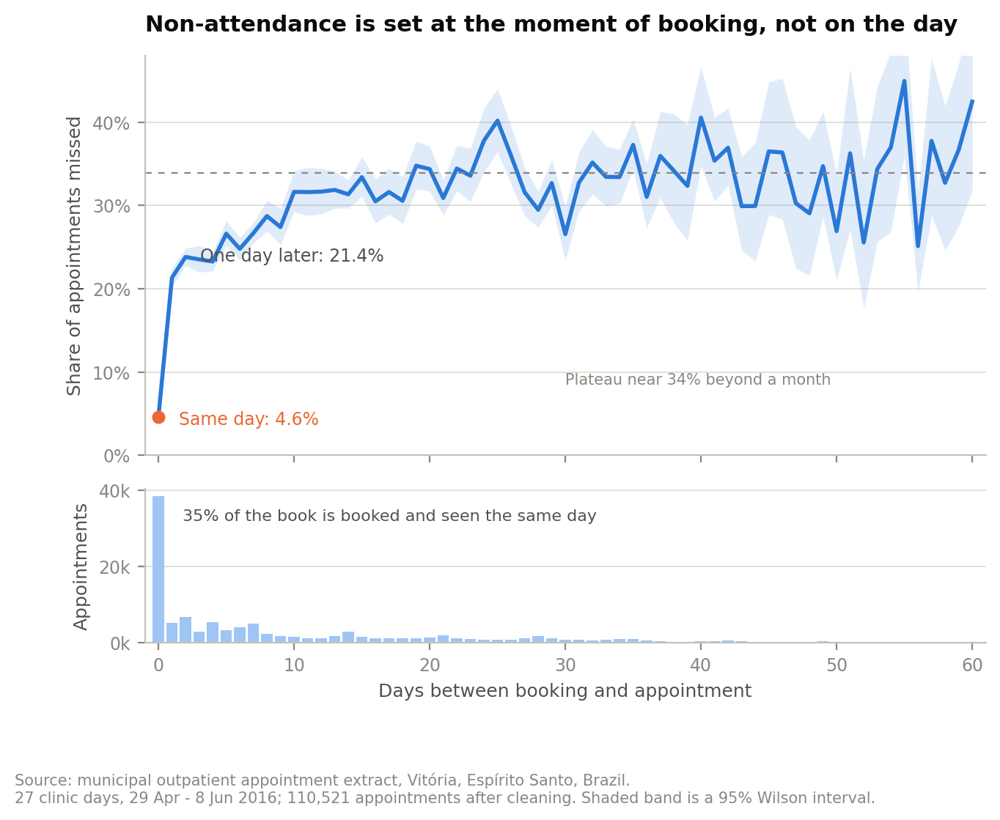
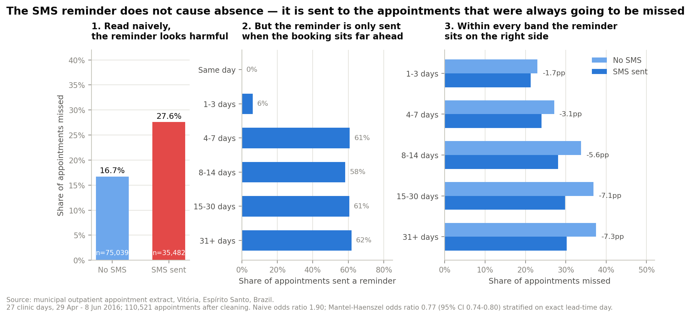
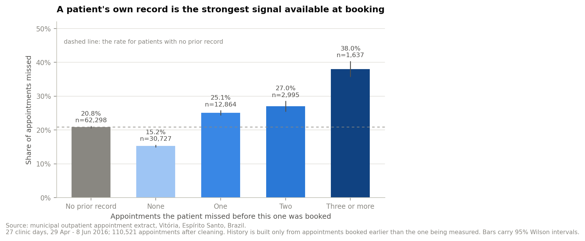
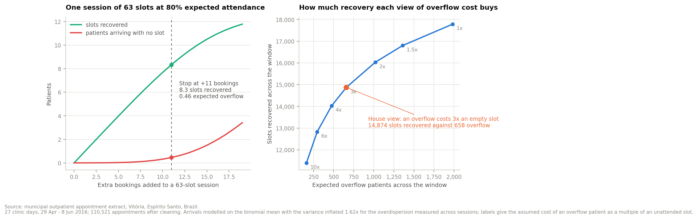

Operations · Healthcare
110,521 public outpatient appointments, read for how much capacity non-attendance takes, what actually predicts it, and what a service manager can do about it on Monday.
Of 110,521 appointments across 27 clinic days, 22,314 were not attended — 20.2%, or 826 unused slots every clinic day. Slot utilisation runs at 79.8%. Over the six-week window that is 5.4 clinic days of capacity simply gone.
Same-day bookings are missed 4.6% of the time. Next-day bookings, 21.4% — a 4.6x step in twenty-four hours. Beyond a month the rate plateaus around 33%.
The distributional consequence is the operational one: same-day bookings are 35% of the book but only 8% of the leakage, while appointments booked more than a week out are 36% of the book and 57% of everything lost.

In the raw data, patients who received an SMS reminder missed appointments more often than those who did not: 27.6% against 16.7%, an odds ratio of 1.90. This result is repeated across dozens of published analyses of this dataset, usually with some speculation about reminder fatigue.
It is an artefact of who gets sent one. SMS coverage is 0% on same-day bookings, 6% at one to three days, and around 60% beyond a week. Median lead time is 14 days in the SMS arm and 0 in the no-SMS arm — 51% of which is same-day bookings, the group that almost never misses.
Stratify by lead time and the sign reverses. Within every band SMS is favourable. A Mantel-Haenszel estimate across 105 exact lead-day strata gives OR 0.769 (0.742–0.797). A nested logistic model tells the same story: 1.899 falls to 0.789 on adding lead time alone, and to 0.790 after eight further covariates. One confounder does all of the work.

Patients recur in this data, so history is available — but it has to be built from appointments strictly earlier than the one being predicted, ordered by booking time. Built naively it leaks the target and the model looks far better than it is.
Constructed safely: patients who have never missed run at 15.2%; one prior miss, 25.1%; two, 27.0%; three or more, 38.0%. It is the largest term in the model at an odds ratio of 2.83.

The marginal overbooking rule is P(fill) < 1/(1+M), and the unit cost cancels out of it. The standard derivation assumes binomial arrivals; that assumption is testable here and it fails — session counts are twice as dispersed as binomial, 1.62x after modelling. The published rule takes the haircut.
On a typical 63-slot session at 80% attendance that is +11 bookings, 8.3 slots recovered against 0.46 expected overflow, and utilisation moving from 80% to 93%. Across the portfolio: 14,874 slots recovered against 658 expected overflow — a 23:1 ratio — worth BRL 5.37M a year at the stated slot cost.

Recommendation
Overbook to the marginal rule, and shorten lead times second. This is not the ordering I expected: lead-time compression is the cleaner intervention and it recovers 3,145 slots (BRL 1.31M a year), roughly a quarter of what overbooking is worth.
They are sequenced rather than alternatives. Lead times cannot be shortened without near-term capacity to shorten them into, and overbooking is what creates that capacity. The ranking is invariant to the cost-per-slot assumption across the whole range swept.
Six weeks of one Brazilian public health service in 2016. Capacity is inferred from the booked list, so rostered-but-unbooked slots are invisible and true utilisation may be worse. The overbooking case rests on unmet demand the data cannot verify — roughly 725 extra patients per clinic day would have to exist — and that is the largest risk to the recommendation, stated as such in the memo.